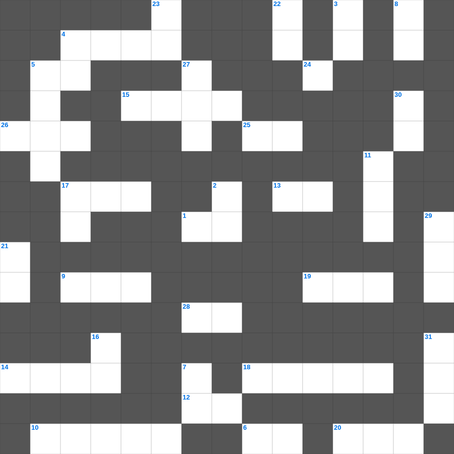

사사기 마스터 100
📌 서비스 정의
십자가로세로는 교회 주보와 주일학교에서 사용할 수 있는 성경 기반 가로세로 퍼즐 서비스입니다. 성경 인물, 사건, 핵심 구절을 바탕으로 제작되었습니다. 온라인 풀이 및 인쇄 기능을 제공합니다.
📖 사사기란?
사사기는 가나안 정복 후 사사들이 이스라엘을 다스리던 시대를 기록합니다. 반복되는 배도와 구원의 패턴이 나타나며 총 21장입니다.
📚 사사기의 주요 사건·주제
에훗과 드보라의 구원 · 기드온의 300명 용사 · 삼손과 들릴라 · 입다의 서원 · 미가의 신상 사건
무료로 즐기는 사사기 사사기 가로세로 퀴즈! 35개의 힌트로 구성된 가로세로 낱말 퍼즐입니다. PC와 모바일 모두 지원되며, 정답을 바로 확인할 수 있어 혼자서도 쉽게 풀 수 있습니다.

📝 가로 힌트
1. 베드로전서 5장 13절: 베드로가 '내 아들'이라고 부른 인물
4. 믿음의 조상, 본토 친척 아비 집을 떠난 자
5. 하나님이 이스라엘을 택하신 이유 '모든 민족 중 가장 이것하기 때문이 아님'
6. 사람이 떡으로만 사는 것이 아니요 여호와의 입에서 나오는 이것으로 삶
9. 여호수아가 요단강을 건널 때 앞세운 것
10. 탕자가 집을 나갔다가 돌아온 이야기
12. 풍년이 든 해의 수
13. 사람을 두려워하면 올무에 걸리게 되거니와 여호와를 의지하는 자는 이것하리라
14. 너는 내일 일을 자랑하지 말라 하루 동안에 무슨 일이 일어날지 네가 이것함이니라
15. 가나안 남부 정복 중 죽인 왕들의 수
17. 아브넬에 의해 죽임을 당한 요압의 발 빠른 동생
18. 백성들이 율법을 깨닫도록 도와준 사람들
19. 호렙산에서 가데스 바네아까지 열하루면 갈 길을 헤맨 시간
20. 야곱이 사랑한 막내 아들
24. 미련한 자의 입술은 다툼을 일으키고 그의 입은 이것을 자청하느니라
25. 여호와의 율법은 완전하여 이것을 소성시키며
26. 다니엘이 본 환상 중 큰 바다에서 나온 넷째 짐승의 특징 (무섭고 놀라우며 매우 이것하며)
28. 엘리야가 승천할 때 떨어진 것 (엘리사가 취함)
📝 세로 힌트
2. 바울의 주치의이자 누가복음 기록자
3. 요셉이 보디발의 아내 유혹을 물리치고 간 곳
4. 지혜로운 재판의 대상이었던 '진짜 엄마를 찾는 이 짐승'
5. 슬프다 이 성이여 전에는 사람들이 많더니 이제는 어찌 그리 이것 앉았는고
7. 시체를 만진 자는 며칠 동안 부정합니까
8. 내 사랑하는 자의 목소리로구나 보라 그가 산에서 달리고 작은 산을 이것 넘어오는구나
11. 너는 청년의 때에 너의 이것을 기억하라
16. 사람들이 하는 모든 말에 네 이것을 두지 말라
16. 내 누이 내 신부야 네가 내 이것을 빼앗았구나
17. 인류 최초의 사람
21. 에스라가 예루살렘에 도착해서 들은 충격적인 소식 '백성들이 이것함'
22. 주여 내가 만민 중에서 주께 감사하오며 뭇 나라 중에서 주를 이것 하리이다
23. 이스라엘이 여호와를 섬기는 것은 이 날의 이것임
27. 한나가 실로에서 기도할 때 엘리가 오해한 것
29. 게으른 자는 그 손을 그릇에 넣고도 입으로 올리기를 이것하느니라
30. 아비야 왕이 전쟁 중 하나님께 부르짖을 때 제사장들이 분 것
31. 다리오 왕 때 강 건너편 총독으로 조사를 의뢰한 자
🧩 이 퍼즐에서 배우는 내용
이 퍼즐은 사사기 마스터 100의 핵심 단어와 개념을 자연스럽게 복습할 수 있도록 구성되었습니다. 주일학교 수업이나 개인 성경공부에서 학습 내용을 점검하는 용도로 바로 활용할 수 있습니다.
🧑🏫 교회 교육 자료 활용
이 퍼즐은 주일학교 교재 추천 자료로 활용할 수 있고, 주일학교 주보에 넣기 좋은 분량으로 구성되어 있습니다. 수업용 주일학교 교안에 활동지로 붙이거나, 예배 후 복습용 주일학교 공과교재로 바로 사용할 수 있습니다.
🏷️ 키워드
사사기 가로세로 퀴즈, 사사기, 십자가로세로, 성경퀴즈, 말씀퀴즈, 가로세로퍼즐, 주일학교 교재 추천, 주일학교 주보, 주일학교 교안, 주일학교 공과교재